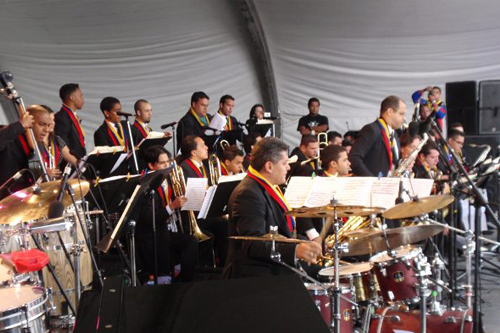
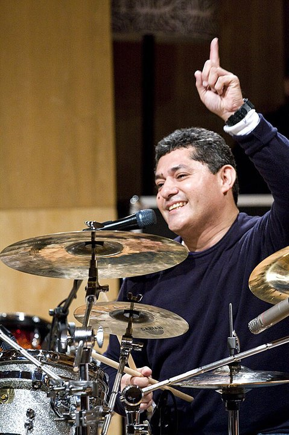

La SBBBJ forma parte de la Fundación Musical Simón Bolívar, conocida a nivel mundial como “El Sistema”, bajo la dirección de Andrés Briceño está conformada por 40 músicos profesionales que trabajan en pro de la excelencia, fomento y difusión del género jazz en Venezuela.
Talentosos ejecutantes, tocando en conjunto el más complejo repertorio desde el Swing del Jazz Tradicional hasta el Latin Jazz Fusion, donde las improvisación tiene un carácter protagónico y la creatividad se hace presente en las interpretaciones.

En su breve trayectoria la SBBBJ muestra el talante musical de los venezolanos, que aman la música y la ejecutan con virtuosismo.
Constantes talleres y seminarios con maestros internacionales como el saxofonista Rolando Briceño, los trompetistas James Seely y James Delano Zollar; los trombonistas James Richard Griffin y Stafford Hunter; los pianistas Daniel Asbury Mixon, Luis Perdomo y Ed Simmon; y la contrabajista Miriam Sullivan perfeccionan la formación de los integrantes de la SBBBJ
“Esto es maravilloso. Es una cosa totalmente nueva. Espero que iniciemos a partir de ahora una relación de enriquecimiento mutuo entre el Jazz at Lincoln Center y Venezuela. Queremos ir a Venezuela y hacer residencia educativa. Queremos establecer una relación muy fuerte”
-- Todd Stoll, director del departamento de educación del Jazz at Lincoln Center, Nueva York
Andrés Briceño
Músico venezolano, baterista y trompetista Andrés Briceño ha tocado y realizado giras con artistas nacionales y extranjeros de trayectoria internacional entre los que hay que mencionar a Jeff Berlin, Rolando Briceño, Bobby Cruz, Eddie Daniels, Oscar De León, Olegario Díaz, Pedro Eustache, Cheo Feliciano. Bela Fleck, Pablo Gil, Abraham Laboriel, Leo Quintero, Valdemar Rodríguez, Aldemaro Romero, Otmaro Ruiz, Dave Samuels, Arturo Sandoval, Juan Pablo Torres, Dave Valentín y Gerry Weill. En el mundo sinfónico ha participado como baterista invitado especial de la Sinfónica de la Juventud Venezolana Simón Bolívar, la Orquesta Sinfónica de Venezuela, la Orquesta Sinfónica Gran Mariscal de Ayacucho y la Orquesta Sinfónica Municipal de Caracas.
En la actualidad Andrés Briceño posee el patrocinio y la condición de artista representante en Venezuela de las prestigiosas marcas de baterías Pearl, de baquetas Vic Firth, de cueros Remo y de platillos Sabian. Es el coordinador de la cátedra de batería del Conservatorio de Música Simón Bolívar y es el director fundador titular de la Simón Bolívar Big-Band Jazz.
Linda Lee Briceño
Trompetista, cantante y compositora, a los 24 años su trayectoria nacional e internacional la convierten en una de las estrellas más versátiles de nuestro panorama musical.

Linda creció en una familia de músicos apasionados. Su padre, el baterista Andrés Briceño, actual director de la Big Band de Jazz del Sistema Nacional de Orquestas, descubre sus habilidades desde muy niña, y se ocupa personalmente de su formación hasta que Linda cumple seis años y la inscribe en el Núcleo La Rinconada del Sistema de Orquestas Juveniles e Infantiles de Venezuela.
Solista en el Simón Bolívar Big Band Jazz de su padre, con el que se presentó en 2009 en el festival de jazz “Ajazzgo”, de Cali, y el Festival de Bogota “Jazz al Parque”, ante audiencias superiores a las 15 mil personas, Linda ha demostrado ser una entusiasta investigadora musical.
Ha participado en numerosos conciertos como invitada especial, con figuras como el maestro Gerry Weil. Participó en el I Festival de Jazz en la Isla de Margarita 2005; ocasión a la que acompaño a la cantante Biela Da Costa, con la cual continua tocando. Actualmente es integrante e invitada especial de la filas de trompeta en la Simón Bolívar Big-Band Jazz.
FESTIVALES
Esta llamativa propuesta jazzística ha generado grandes expectativas a nivel internacional

AJAZZGO 2009 en la ciudad de Cali, ante un público de 15000 personas.

Jazz Al Parque, evento celebrado en la ciudad de Bogotá donde más de cinco mil personas aplaudieron a la joven banda venezolana.
Festival Internacional de Jazz de Barquisimeto noviembre 2009 compartiendo el escenario junto a estrellas internacionales del jazz como Dave Samuels y Roberto Quintero del Caribbean Jazz Project.
Gira Estados Unidos octubre-noviembre 2012
Importante y trascendental gira por los Estados Unidos de América del 28 de Octubre al 06 de Noviembre del año 2011 presentándose en diferentes escenarios como: en New York :Jazz at Lincoln Center (acompañados por el Maestro Winton Marsalis), Harlem Stage Philip Randolph High School, Harlem Stage Gatehouse, Queens, Consulado de Venezuela, The Casita María Center for Arts and Education, Auditorium New York University y finalmente en Boston en el Jordan Hall New England Conservatory.